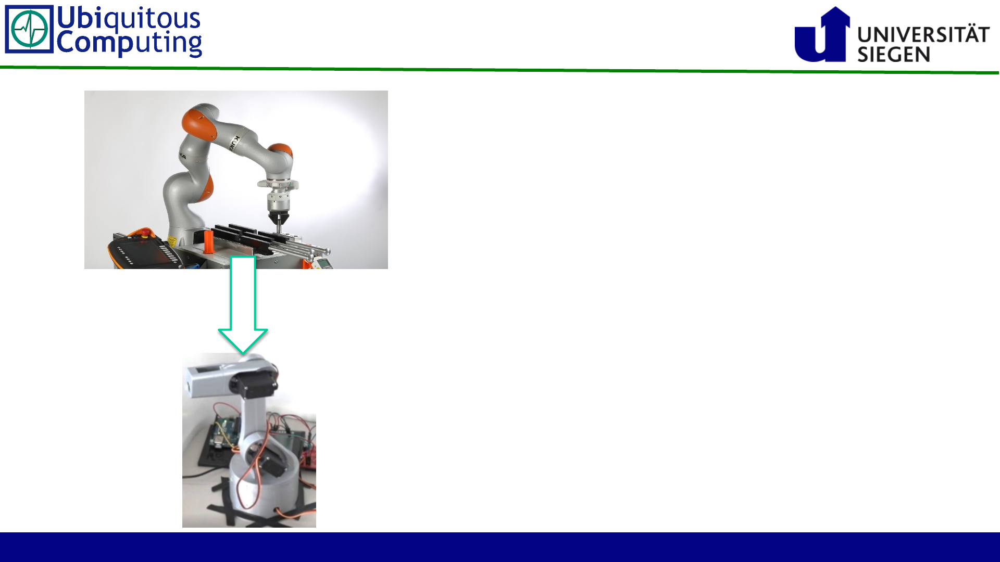

Why this framework?
• Many human-robot interactive systems
aim for accurate and fast
• … which leads to costly working
actuation and tracking prototypes
This prototyping framework is:
• fully open-source
• for human-robot desk interaction
• uses low-cost parts, that are easy to
replace, adapt, or extend
• combines stereo-vision object tracking
with a lightweight robot arm design
2
Source:
https://www.konstruktion-
entwicklung.de/kuka-zeigt-
effiziente-mensch-roboter-
kollaboration